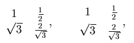

Pakiet udostêpnia ¶rodowiska EQ i EQA s³u¿±ce do prezentacji
wzorów matematycznych (jest zgodny z pakietem showkeys).
G³ówn± ró¿nic± w stosunku do ¶rodowisk
equation i eqnarray jest to, ¿e wzory s± numerowane
tylko wtedy, gdy w tek¶cie wystêpuje do nich odwo³anie
(oczywi¶cie przez etykietê).
Pakiet posiada nastêpuj±ce opcje:
|
allnumber
|
numerowane s± wszystkie wzory (definiowane ¶rodowiskami EQ
lub EQA) -- nie tylko te do których s± odwo³ania
|
|
warning
|
podawane s± komunikaty o wzorach etykietowanych, do których nie ma
odwo³añ
|
|
easyold
|
definiowane s± ¶rodowiska wystêpuj±ce w starszych wersjach pakietu:
EQS,
EQS*,
EQ*,
EQA*
|
|
fleqn
|
wzory s± dosuniête do lewego marginesu; lewy margines mo¿na ustaliæ
poleceniem \eqleftmargin{d³ugosæ}; je¶li
równocze¶nie jest u¿yta opcja leqno
to wielko¶æ marginesu musi uwzglêdniæ miejsce
na oznaczenie wzoru |
|
leqno
|
oznaczenia wzorów s± wstawiane z lewej strony
|
|
math
|
powoduje definiowanie dodatkowych makroinstrukcji przydatnych przy
sk³adzie wzorów
|
Prosty przyk³ad
\begin{EQ}\label{eq:1}
\frac{x}{y} = z
\end{EQ}
\begin{EQ}\label{eq:2}
\frac{x}{y} = z
\end{EQ}
I will refer only to \eqref{eq:1} or,
in the old style, \refeq{eq:1}.
| |
ilustruje dzia³anie i przy okazji pokazuje, ¿e zosta³y zdefiniowane dwie makroinstrukcje
s³u¿±ce
do powo³ania siê na dany wzór (makroinstrukcja ref nie w³±cza
mechanizmu oznaczania wzoru i generowania etykiet),
ró¿nice w dzia³aniu widaæ na ilustracji; uzgodnienie po³±czeñ wymaga trzykrotnej kompilacji.
Zarówno ¶rodowisko EQ jak i EQA mo¿e s³u¿yæ do budowy
tabel, ró¿nica polega na tym, ¿e w przypadku EQ ca³y wzór jest
opatrzony jednym numerem, a w przypadku EQA numerem jest
opatrzony
ka¿dy wiersz tabeli (o ile jest on zaetykietowany
i jest do niego odwo³anie lub
zosta³o u¿yte polecenie \yesnumber).
\begin{EQ}[rcll]
\nabla\cdot(\rho\nabla u)&=&f \qquad
&\mbox{on $\Omega$} \\
u&=&u_{0}&\mbox{on $A\subset\partial\Omega$} \\
(\rho\nabla u)\cdot n&=&u_{1}
&\mbox{on $B\subset\partial\Omega$}\label{eq2}
\end{EQ}
in \eqref{eq2} ....
| |
\begin{EQA}[rcll]
\nabla\cdot(\rho\nabla u)&=&f \qquad
&\mbox{on $\Omega$} \\
u&=&u_{0}&\mbox{on $A\subset\partial\Omega$}
\label{eq3}\\
(\rho\nabla u)\cdot n&=&u_{1}
&\mbox{on $B\subset\partial\Omega$}\label{eq4}
\end{EQA}
in \eqref{eq3} and \eqref{eq4} ....
| |
W obu ¶rodowiskach parametr opcjonalny okre¶la sposób pozycjonowania
poszczególnych kolumn:
| l | -- |
do lewej krawêdzi
|
| c | -- |
centralnie
|
| r | -- |
do prawej krawêdzi
|
| . | -- |
powoduje skasowanie odleg³o¶ci miêdzy kolumnami (odpowiada
miêdzykolumnowej specyfikacji
@{})
|
polecenia przej¶cia do nowego wiersza (//) mo¿na u¿ywaæ nawet wtedy, gdy
parametr opcjonalny nie jest zdefiniowany -- domy¶lnie zdefiniowana
jest jedna wycentrowana kolumna (ale nie jest przewidziane miejsce
na oznaczenie wzoru).
Do ³±czenia kolumn s³u¿y makroinstrukcja \eqmulticol o nastêpuj±cej
sk³adni:
\eqmulticol{ncol}{align}{zawarto¶æ}
gdzie:
|
ncol | -- |
liczba ³±czonych kolumn
|
|
align | -- |
sposób pozycjonowania kolumny (tak jak w opcjonalnym parametrze
¶rodowisk)
|
|
zawarto¶æ | -- |
zawarto¶æ kolumny
|
Dodatkowe polecenia:
\yesnumber -- wymusza numerowanie wzoru (lub wiersza tabeli
w którym jest u¿yty)
\begin{EQ}[rcl]\yesnumber
a & = & \frac{1}{23} \\
b & = & \sqrt{\frac{1}{23}}
\end{EQ}
|
|
equationleft -- powoduje, ¿e wszystkie nastêpne wzory bêd± dosuniête
do lewego marginesu (p. opcja fleqn)
equationcenter -- powoduje, ¿e wszystkie nastêpne wzory bêd±
centrowane
numberleft -- powoduje, ¿e we wszystkich nastêpnych wzorach
oznaczenia bêd± po lewej stronie (p. opcja lefteqno)
numberright -- powoduje, ¿e we wszystkich nastêpnych wzorach
oznaczenia bêd± po prawej stronie
\eqspacing{odleg³o¶æ} -- odleg³o¶æ przed i po wzorze
\eqcolumnsep{odleg³o¶æ} -- odleg³o¶æ miêdzy kolumnami
\eqrowsep{odleg³o¶æ} -- odleg³o¶æ miêdzy wierszami
\eqlabeltop -- oznaczenie wzoru na górze
\eqlabelbot -- oznaczenie wzoru na dole
\eqlabelcenter -- oznaczenie wzoru centralnie
\eqlabeltop
\begin{EQ}
\nabla\cdot(\rho\nabla u) = 0 \\
\nabla\cdot(\rho\nabla u) = 0 \\
\nabla\cdot(\rho\nabla u) = 0 \label[TOP]
\end{EQ}
|
|
\eqlabelbot
\begin{EQ}
\nabla\cdot(\rho\nabla u) = 0 \\
\nabla\cdot(\rho\nabla u) = 0 \\
\nabla\cdot(\rho\nabla u) = 0 \label[BOT]
\end{EQ}
|
|
\eqlabelcenter
\begin{EQ}
\nabla\cdot(\rho\nabla u) = 0 \\
\nabla\cdot(\rho\nabla u) = 0 \\
\nabla\cdot(\rho\nabla u) = 0 \label[CENTER]
\end{EQ}
|
|
| zmiana pozycji oznaczenia wzoru jest mo¿liwa jedynie we wzorach
wieloliniowych. |
makroinstrukcja \label ma dodatkowe w³asno¶ci:
|
\label{nazwa_etykiety} | --
| dzia³anie standardowe |
|
\label[tekst] | --
| wzór zostanie oznaczony podanym
tekstem (nie jest definiowana etykieta,
na któr± mo¿na siê powo³aæ) |
|
\label[tekst]{nazwa_etykiety} | --
| wzór zostanie oznaczony podanym
tekstem, nazwa_etykiety jest etykiet±,
na któr± mo¿na siê powo³aæ |
|
\label(tekst) | --
| wzór zostanie oznaczony podanym
tekstem, który zostanie ujêty w nawiasy ()
(nie jest definiowana etykieta,
na któr± mo¿na siê powo³aæ) |
|
\label(tekst){nazwa_etykiety} | --
| wzór zostanie oznaczony podanym
tekstem, który zostanie ujêty w nawiasy (),
nazwa_etykiety jest etykiet±,
na któr± mo¿na siê powo³aæ |
Przyk³ad:
\begin{EQA}[c]
\nabla\cdot(\rho\nabla u) = 0
\label(eq.1){eq:custom:a} \\
\nabla\cdot(\rho\nabla u) = 0
\label[eq.2]{eq:custom:b} \\
\nabla\cdot(\rho\nabla u) = 0
\label[***1***]
\end{EQA}
I will refer to
\eqref{eq:custom:a} and
\eqref{eq:custom:b}
|
|
W parametrze makroinstrukcji \label mo¿na u¿yæ znaku
~ -- oznacza on wstawienie polecenia
\theequation z ostatnio u¿yt± warto¶ci± licznika wzorów, bez jego
inkrementacji. W ten sposób ³atwo uzyskaæ efekt dodatkowego numerowania
wzoru
(p. tak¿e pakiety
subeqn i subeqnarray)
\begin{EQA}[c]\label{dqq}\yesnumber
\nabla\cdot(\rho\nabla u) = 0 \label(~.a){aqq}\\
\nabla\cdot(\rho\nabla u) = 0 \label(~.b){bqq}\\
\nabla\cdot(\rho\nabla u) = 0\label(~.c){cqq}
\end{EQA}
\eqref{aqq} \eqref{bqq} \eqref{cqq}
|

|
| konieczne jest zdefiniowanie etykiety
na pocz±tku (\label{dqq}\yesnumber),
tak aby zosta³a zwiêkszona warto¶æ licznika, w przeciwnym razie
kolejne linie by³yby oznaczane (0.a), (0.b) i (0.c)
|
Dodatkowe polecenia aktywowane opcj± math
|
\frac[d³ugo¶æ]{licznik}{mianownik}
| -- |
| parametr opcjonalny pozwala na zmianê grubo¶ci kreski u³amkowej
(z powodu b³êdów definicji przed wywo³aniem
pakietu nale¿y skasowaæ standardow± definicjê makroinstrukcji
poleceniem \let\frac\relax)
|
|
\dfrac[d³ugo¶æ]{licznik}{mianownik}
| -- |
| licznik i mianownik sk³adany jest zawsze w ,,displaystyle''; parametr opcjonalny pozwala na zmianê grubo¶ci kreski u³amkowej
|
|
\tfrac[d³ugo¶æ]{licznik}{mianownik}
| -- |
| licznik i mianownik sk³adany jest zawsze w ,,textstyle''; parametr opcjonalny pozwala na zmianê grubo¶ci kreski u³amkowej
|
|
\eqbox{zawarto¶æ} |
|
\eqbox(grubo¶æ,odleg³o¶æ){zawarto¶æ}
| -- |
|
makroinstrukcja pozwala na ujêcie fragmentu wzoru w ramkê;
parametr opcjonalny okre¶la grubo¶æ ramki i jej odleg³o¶æ od zawarto¶ci
\[
\eqbox{\int_0^\infty dx}~~~~
\eqbox(2pt,5pt){\int_0^\infty dx}
\]
|
|
|
|
\norm{zawarto¶æ}
| -- |
|
|
|
\abs{zawarto¶æ}
| -- |
|
|
|
\ParDer[definicja mianownika]{licznik}
| -- |
|
|
|
\DIV{zawarto¶æ}
| -- |
|
|
|
\GRAD{zawarto¶æ}
| -- |
|
|
|
\LAPLA{zawarto¶æ}
| -- |
|
|
|
\SUM{od}{do} |
|
\SUM[indeks]{od}{do}
| -- |
|
|
|
\PROD{od}{do} |
|
\PROD[indeks]{od}{do}
| -- |
|
|
Dodatkowe ¶rodowiska aktywowane opcj± math
|
ARRAY
| -- |
ró¿nicê w stosunku do ¶rodowiska array
ilustruje przyk³ad (pola tablicy s± sk³adane w ,,displaystyle'')
\[
\left(\begin{array}{cc}
1 & \frac{1}{2} \\
\sqrt{3} & \frac{2}{\sqrt{3}}
\end{array}\right), \qquad
\left(\begin{ARRAY}{cc}
1 & \frac{1}{2} \\
\sqrt{3} & \frac{2}{\sqrt{3}}
\end{ARRAY}\right),
\]
|
|
|
|
MATRIX
| -- |
ró¿nicê w stosunku do makroinstrukcji matrix
ilustruje przyk³ad (odleg³o¶æ miêdzy wierszami)
\[
\matrix{
1 & \frac{1}{2} \cr
\sqrt{3} & \frac{2}{\sqrt{3}}
}, \qquad
\begin{MATRIX}
1 & \frac{1}{2} \\
\sqrt{3} & \frac{2}{\sqrt{3}}
\end{MATRIX}
\]
|

|
|
Pakiet easyeqn wraz z pakietami pomocniczymi jest dostêpny
pod adresem:
ftp://ftp.gust.org.pl/TeX/macros/latex/contrib/easy/

 W³odzimierz Macewicz
W³odzimierz Macewicz
Ostatnie zmiany: 12.09.2004.